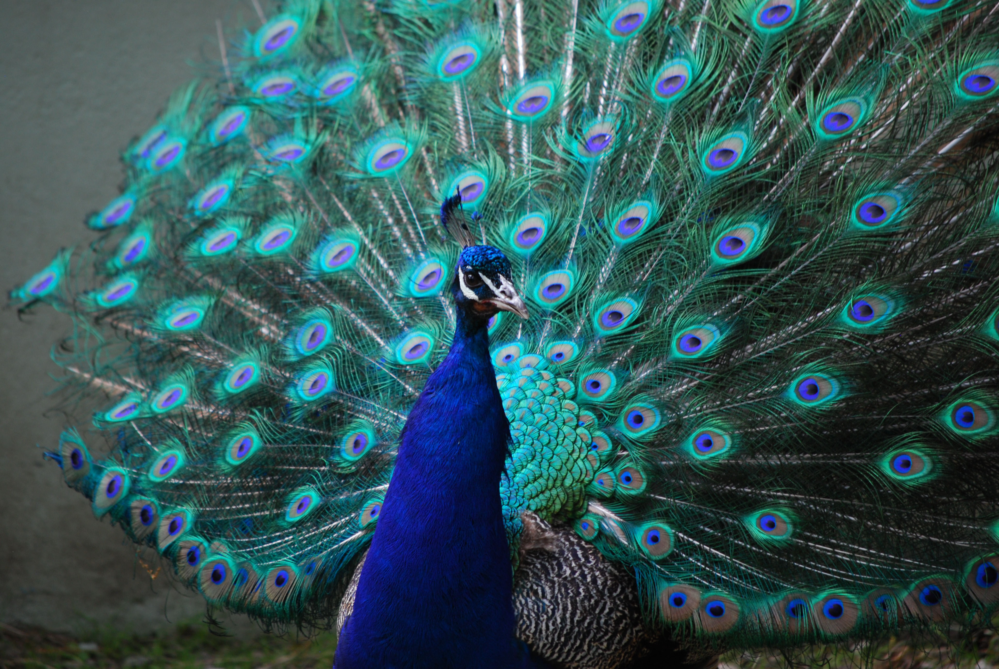
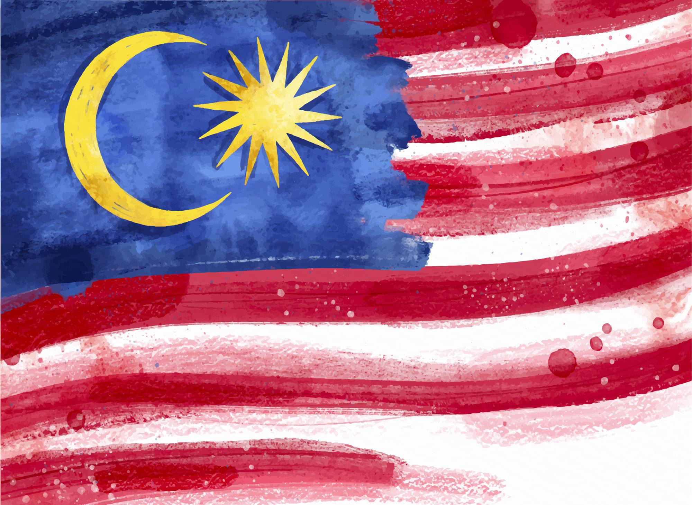

Artikel
Source :
Article image
Sejarah Reog Ponorogo

Dahulu kala di Kerajaan Kediri. Hiduplah seorang dewi yang cantik jelita bernama Dewi Songgo Langit. Karena masih juga belum menikah, Sang Raja Kediri meminta anaknya Dewi Songgo Langit untuk segera menikah. Namun,
Dewi Songgo Langit hanya tertunduk diam. Dia pun meminta izin untuk melakukakn tapa brata agar memperoleh jawaban yang tepat. Beberapa hari setelah selesai melakukan tapa brata dan memperoleh jawaban, Sang Dewi pun
pergi menghadap Sang Raja untuk memberikan jawabannya. Lalu mengutarakan sebuah syarat jika ingin menjadi suaminya harus menghadirkan sebuah pertunjukan yang belum pernah ada sebelumnya dan barisan kuda kembar
sejumlah 144 ekor. Terakhir, Sang Dewi meminta syarat harus membawa seekor hewan berkepala dua. Bagi Sang Raja, syarat yang diutarakan sangat mustahil. Dikarenakan harus menghadirkan binatang berkepala dua. Namun mau
tidak mau, Raja Kediri mengumumkannya dalam sebuah sayembara.
Kabar pun menyebar, namun banyak di antara mereka yang mengundurkan diri karena tidak sanggup memenuhi syarat karena merasa mustahil untuk dipenuhi. Tetapi, terdapat dua raja yang menyanggupi syarat tersebut. Mereka
adalah Raja Singo Barong dari Kerajaan Lodaya dan Raja Klono Sewandono dari Kerajaan Bantarangin di daerah Wengker.
Raja Singo Barong adalah manusia setengah harimau dengan bulu lebatnya yang penuh dengan kutu sehingga harus memelihara seekor burung merak untuk mematuki kutu-kutu tersebut. Dia juga sering bertindak kejam terhadap
rakyatnya yang dianggap pembangkang dengan memberikan hukuman mati tanpa ada pembelaan diri.
Di saat itu, belum ada seseorang yang dirasa pantas Raja Singo Barong untuk dijadikan permaisurinya kecuali Dewi Songgo Langit. Untuk mewujudkan hal tersebut Raja Singo Barong mengutus para prajuritnya untuk mencari
syarat-syarat yang diajukan untuk menikahi Dewi Songgo Langit. Setelah beberapa hari, Raja Singo Barong masih belum berhasil mengumpulkan syarat-syarat yang diajukan. Hal ini membuatnya marah, Raja Singo Barong tahu
bahwa ada raja lain yang ingin menikahi Dewi Songgo Langit yaitu Raja Klono Sewandono. Mengetahui hal itu, Raja Singo Barong memerintahkan Patih Iderkolo untuk mengirim prajurit ke Bantarangin dengan tujuan
memata-matai Raja Klono Sewandono.
Beberapa hari kemudian, Iderkolo menghadap Raja Singo Barong dan melapor bahwa Raja Klono Sewandono hampir berhasil mengumpulkan semua syarat-syarat yang diajukan untuk menikahi Dewi Songgo Langit hanya binatang
berkepala dua saja yang belum didapat. Mendengar hal itu Raja Singo Barong murka dan memerintah Patih Iderkolo untuk menyiapakan semua parjurit dan bersiap untuk merampas semua syarat yang sudah didapat Raja Klono
Sewandono. Di lain sisi, Raja Klono Sewandono sudah selesai mengumpulkan semua syarat kecuali hewan berkepala dua. Raja Klono Sewandono kemudian memerintahkan prajurit untuk berhenti mencari hewan berkepala dua,
karena dia sendiri yang akan berusaha mencarinya.
Ketika hendak meninggalkan kerajaan, Patih Bujang Ganong datang menghadap Raja Klono Sewandono dan memberitahukan bahwa ada mata-mata dari Kerajaan Lodaya yang mwngintai Kerajaan Bantarangin. Mendengar hal itu, Raja
Klono Sewandono mengutus Patih Bujang Ganong dan anak buahnya untuk menyamar sebagai rakyat biasa dan berbaur dengan penduduk desa. Lalu, Bujang Ganong pun pergi menemui anak buahnya dan mengutus mereka untuk
menyamar sebagai pedagang. Dari hasil penyelidikan, ditemukan satu orang yang dicurigai sebagai mata-mata dari Kerajaan Lodaya yang telah lama melakukan penyamaran di Wengker. Mata-mata itu kemudian ditangkap dan
diintrogasi. Tetapi, ketika proses introgasi belum berakhir mata-mata itu melakukan bunuh diri. Hasil introgasi kemudian dilaporkan. Diketahui bahwa Raja Singo Barong bersama pasukannya berniat merebut semua syarat
yang sudah dipenuhi Raja Klono Sewandono. Mendengar hal itu, Raja Klono Sewandono berencana untuk menggempur Kerajaan Lodaya dan mengutus Bujang Ganong untuk menyiapkan pasukannya.
Sementara itu, Raja Singo Barong yang menunggu laporan dari mata-matanya mulai gelisah. Dia pun mengutus Patih Iderkolo untuk menuju ke perbatasan dan menjemput mata-matanya. Setelah Patih Iderkolo pergi, Raja Singo
Barong pergi menuju ke taman sari untuk mencari si burung merak karena kepalanya terasa gatal sekali. Raja Singo Barong sangat menikmati ketika kutu di kepalanya dipatuk oleh burung merak hingga membuatnya tertidur
pulas. Bahkan dia tidak menyadari bahwa pasukan Bantarangi telah datang menyerbu dan mulai menghancurkan Lodaya. Tidak ada yang berani melaporkan kejadian tersebut karena tidak boleh ada satu orang pun yang
mengganggunya ketika di taman sari.
Tanpa disadari, Raja Singo barong telah diawasi oleh Raja Klono Sewandono. Melihat bentuk wajah Singo Barong yang berupa harimau dan burung merak yang bertengger di bahunya membuat seolah-olah tampak seperti hewan
berkepala dua. Dalam benak Raja Klono Sewandono, apabila disatukan tentu lengkaplah sudah syarat pernikahannya untuk meminang Dewi Songgo Langit.
Ketika penyerbuan telah mendekati istana, barulah Raja Singo Barong terbangun karena terdengar suara keributan. Dengan amarah karena tidurnya terganggu, Raja Singo Barong segera bergegas menuju istana untuk mencari
tahu siapa pelakunya. Raja Klono Sewandono pun langsung menghadangnya. Mengetahui bahwa yang membuat keributan adalah Raja Klono Sewandono, Raja Singo Barong pun semakin murka yang akhirnya mereka saling beradu
kesaktian.
Saat hendak melakukan pertarungan, Raja Klono Sewandono mengeluarkan pusaka andalannya. Berupa cemeti bernama Pecut Samandiman. Saat Pecut Samandiman mengenai tubuh Singo Barong, seketika tubuhnya terpental terkapar
di atas tanah. Kemudian, leher Raja Singo Barong menyatu dengan burung merak sehingga menjadi hewan berkepala dua. Hingga akhirnya Singo Barong pun ditangkap dan dibawa menuju Kerajaan Bantarangin.
Setelah semua syarat terpenuhi, Raja Klono Sewandono bersama pengiringnya datang ke Kediri untuk meminang Dewi Songgo Langit. Sesampainya di sana, mereka melakukan sebuah pertunjukan yaitu kesenian baru berupa
barisan 144 ekor kuda kembar dalam iringan gamelan, gendang dan terompet. Di depan barisan tersebut, ada Singo Barong seekor binatang berkepala dua yang menari liar namun indah dan menarik hati.
Dengan ditampilkannya kesenian batu tersebut, maka terpenuhilah sudah syarat yang diminta Dewi Songgo Langit. Mereka akhirnya menikah dan tinggal di daerah Wengker atau yang sekarang menjadi Ponorogo. Oleh masyarakat
setempat, kesenian baru ini disebut sebagai Reog Ponorogo.
Source : Cerita Rakyat Asal usul Reog Ponorogo
Berita Reog Ponorogo

Teman-teman, pada bulan April 2022 rakyat Indonesia dikejutkan dengan kabar bahwa negara tetangga kita Malaysia berencana akan mendaftarkan Reog Ponorogo sebagai warisan budaya tak benda ke UNESCO.
Loh, bukannya Reog Ponorogo itu kesenian Indonesia yang asalnya dari Ponorogo, Jawa Timur ya?.
Itu betul teman-teman Reog Ponorogo merupakan kesenian asli Indonesia yang asalnya dari Ponorogo, Jawa Timur.
Tapi, kenapa Malaysia mau mendaftarkan Reog Ponorogo sebagai warisan budaya tak benda ke UNESCO sebagai kesenian yang berasal dari negara mereka?.
Nah, pertanyaan kalian sama dengan yang ditanyakan para warga Indonesia saat itu khususnya warga Ponorogo, Jawa Timur. Tentunya kabar itu langsung mendapat respon keras dari pemerintah Indonesia. Kementerian
Pendidikan, Kebudayaan, Riset, dan Teknologi (Kemendikbudristek) menegaskan bahwa Reog Ponorogo merupakan warisan budaya asli Indonesia yang berasal dari Kabupaten Ponorogo, Jawa Timur.
Teman-teman, ternyata klaim Malaysia atas Reog Ponorogo didasarkan pada kesamaan nama dengan kesenian rakyat dari Negeri Jiran tersebut, yaitu tarian singa yang disebut "Reog". Namun, faktanya tarian Reog dari
Malaysia ini memiliki perbedaan yang cukup mencolok dengan Reog Ponorogo teman-teman. Tarian Reog dari Malaysia tidak memiliki karakter Singo Barong, Bujang Ganong, Klonovi, dan Jathil. Selain itu, tarian Reog dari
Malaysia juga tidak memiliki gerakan-gerakan yang khas seperti Reog Ponorogo.
Mendengar kabar bahwa Reog Ponorogo akan didaftarkan Malaysia ke UNESCO sebagai budaya mereka membuat masyarakat Indonesia khususnya masyarakat Ponorogo merasa tidak terima akan hal itu. Para warga masyarakat secara
serentak melakukan protes kepada pemerintah Indonesia untuk melakukan upaya mencegah Malaysia mendaftarkan Reog Ponorogo sebagai warisan budaya mereka. Mendengar hal itu, Kemendikbudristek pun mengirimkan surat
kepada UNESCO untuk menegaskan bahwa Reog Ponorogo merupakan warisan budaya asli Indonesia. Selain itu, pemerintah Indonesia juga telah melakukan diplomasi budaya dengan Malaysia untuk menyelesaikan masalah ini
secara bilateral.
Setelah beberapa waktu, kedutaan besar Malaysia di Indonesia menyatakan bahwa Malaysia tidak berencana mendaftarkan Reog Ponorogo sebagai salah satu warisan budaya mereka ke UNESCO. Jadi, berita ini asli atau
hoax?. Sebelumnya, wacana Malaysia mengklaim kebudayaan Indonesia ini kembali mencuat setelah adanya pernyataan dari Menteri Koordinator Bidang Pembangunan Manusia dan Kebudayaan Republik Indonesia, Muhadjir
Effendy yang mengatakan upaya mematenkan Reog Ponorogo sebagai warisan budaya tak benda ke UNESCO ternyata tak hanya datang dari Indonesia. Tetapi, juga dari pemerintah Malaysia. Namun faktanya, Malaysia tak ada niat
untuk mengajukan kebudayaan Ponorogo tersebut ke badan PBB. Untuk mengantisipasi hal ini benar-benar terjadi, pemerintah Indonesia mendorong pemerintah Kabupaten Ponorogo untuk segera mengusulkan Reog Ponorogo ke
UNESCO dan mempersiapkan data yang diperlukan.
Wah, untungnya berita ini nggak benar ya sob. Tapi, kok bisa sih berita negara lain yang akan mengambil kebudayaan kita ini tersebar?. Tentunya, berita ini tersebar karena kesalahpahaman kita ya sob. Tapi, dibalik
berita ini, bisa kita jadikan cerminan nih untuk selalu melestarikan budaya Indonesia agar tidak diambil oleh negara lain. Kesenian telah menjadi bagian dari identitas budaya Indonesia dan telah menarik perhatian
dunia internasional.
Umumnya, Reog Ponorogo ditarikan oleh 6 orang penari, yaitu 1 penari Pembarong yang memakai topeng kepala singa dengan hiasan bulu merak, 2 penari Bujang Ganong yang memakai topeng berwarna putih dan merah, 2 penari
Jathilan wanita, dan 1 penari kucingan.
Namun, dalam buku Reog Kendang (2015) karya Herry Lisbijanto, jumlah pemain tari Reog sebanyak 18 orang, terdiri dari:
Kesimpulannya, jumlah penari Reog Ponorogo adalah relatif sesuai kebutuhan acara pementasan.
Namun, dalam buku Reog Kendang (2015) karya Herry Lisbijanto, jumlah pemain tari Reog sebanyak 18 orang, terdiri dari:
- Singo Barong, sebanyak 1-2 orang
- Pujangga Anom atau Bujangganong, terdiri 1-2 orang
- Raja Klono Sewandono, 1 orang
- Sekelompok Jathilan, 6 orang
- Warok, 7 orang
Kesimpulannya, jumlah penari Reog Ponorogo adalah relatif sesuai kebutuhan acara pementasan.
Berat topeng kepala singa yang biasa digunakan oleh penari Reog Ponorogo adalah 50-60 kg.
Wah, berat banget yaa. Maka dari itu, kita harus memberikan hormat kepada para penari-penari Reog Ponorogo yang hebat-hebat ini ya teman-teman.
Wah, berat banget yaa. Maka dari itu, kita harus memberikan hormat kepada para penari-penari Reog Ponorogo yang hebat-hebat ini ya teman-teman.
Umumnya, Reog Ponorogo terdiri dari 2-3 tarian pembukaan.
Tarian pertama biasanya terdapat pria gagah berani dengan pakaian serba hitam, dengan muka dipoles berwarna merah. Berikutnya adalah tarian yang dibawakan oleh para gadis yang menaiki kuda. Tarian ini dinamakan tari jaran kepang atau jathilan.
Tarian pembukaan lainnya jika ada biasanya berupa tarian oleh anak kecil yang membawakan adegan lucu yang disebut Bujang Ganong atau Ganongan. Setelah tarian pembukaan selesai, baru ditampilkan adegan inti yang isinya bergantung kondisi di mana seni Reog ditampilkan. Jika berhubungan dengan pernikahan maka yang ditampilkan adalah adegan percintaan. Untuk hajatan khitanan atau sunatan, biasanya cerita pendekar.
Adegan terakhir adalah Singa Barong, di mana pelaku memakai topeng berbentuk kepala singa dengan mahkota yang terbuat dari bulu burung merak. Topeng ini dibawa oleh penarinya dengan gigi. Kemampuan untuk membawakan topeng ini selain diperoleh dengan latihan yang berat, juga dipercaya diperoleh dengan latihan spiritual seperti puasa dan tapa.
Tarian pertama biasanya terdapat pria gagah berani dengan pakaian serba hitam, dengan muka dipoles berwarna merah. Berikutnya adalah tarian yang dibawakan oleh para gadis yang menaiki kuda. Tarian ini dinamakan tari jaran kepang atau jathilan.
Tarian pembukaan lainnya jika ada biasanya berupa tarian oleh anak kecil yang membawakan adegan lucu yang disebut Bujang Ganong atau Ganongan. Setelah tarian pembukaan selesai, baru ditampilkan adegan inti yang isinya bergantung kondisi di mana seni Reog ditampilkan. Jika berhubungan dengan pernikahan maka yang ditampilkan adalah adegan percintaan. Untuk hajatan khitanan atau sunatan, biasanya cerita pendekar.
Adegan terakhir adalah Singa Barong, di mana pelaku memakai topeng berbentuk kepala singa dengan mahkota yang terbuat dari bulu burung merak. Topeng ini dibawa oleh penarinya dengan gigi. Kemampuan untuk membawakan topeng ini selain diperoleh dengan latihan yang berat, juga dipercaya diperoleh dengan latihan spiritual seperti puasa dan tapa.
Terdapat 5 tokoh dalam kesenian Reog Ponorogo, yaitu:
-
Warok
Warok

"Warok" berasal dari kata wewarah yang berarti orang yang mempunyai tekad suci, memberikan tuntunan dan perlindungan tanpa pamrih.Warok adalah wong kang sugih wewarah (orang yang kaya akan wewarah). Artinya, seseorang menjadi warok karena mampu memberi petunjuk atau pengajaran kepada orang lain tentang hidup yang baik.
Warok merupakan karakter/ciri khas dan jiwa masyarakat Ponorogo yang telah mendarah daging sejak dahulu yang diwariskan oleh nenek moyang kepada generasi penerus. Warok merupakan bagian peraga dari kesenian Reog yang tidak terpisahkan dengan peraga yang lain dalam unit kesenian Reog Ponorogo. Warok adalah seorang yang betul-betul menguasai ilmu baik lahir maupun batin. -
Jathil
Jathil

Jathil adalah prajurit berkuda dan merupakan salah satu tokoh dalam seni Reog. Jathilan merupakan tarian yang menggambarkan ketangkasan prajurit berkuda yang sedang berlatih di atas kuda. Tarian ini dibawakan oleh penari di mana antara penari yang satu dengan yang lainnya saling berpasangan. Ketangkasan dan kepiawaian dalam berperang di atas kuda ditunjukkan dengan ekspresi atau semangat sang penari.
Jathil ini pada mulanya ditarikan oleh gemblak, laki-laki yang halus, berparas tampan atau mirip dengan wanita yang cantik. Gerak tarinya pun lebih cenderung feminin. Ciri-ciri kesan gerak tari Jathilan pada kesenian Reog Ponorogo lebih cenderung pada halus, lincah, dan cekatan. Hal ini didukung oleh pola ritmis gerak tari yang silih berganti antara irama mlaku (lugu) dan irama ngracik. -
Bujang Ganong
Bujang Ganong

Bujang Ganong atau Patih Pujangga Anom adalah salah satu tokoh yang energik, kocak sekaligus mempunyai keahlian dalam seni bela diri sehingga di setiap penampilannya senantiasa diperagakan oleh 2 orang pada umumnya yang selalu ditunggu-tunggu oleh penonton khususnya anak-anak.
Bujang Ganong menggambarkan sosok seorang patih muda yang meskipun secara fisik cenderung buruk rupa, tetapi ia cekatan, berkemauan keras, cerdik, jenaka, dan sakti. Topeng Bujang Ganong berwarna merah menyala dengan khas mata yang melotot, hidung yang besar, dan gigi yang menonjol. Topeng tersebut terbuat dari kayu dadap, sedangkan rambut pada topengnya terbuat dari ekor kuda. -
Klono Sewandono
Klono Sewandono

Klono Sewandono atau Raja Klono adalah seorang raja sakti mandraguna yang memiliki pusaka andalan berupa cemeti yang sangat ampuh dengan sebutan Pecut Samandiman ke mana saja pergi sang Raja yang tampan dan masih muda ini selalu membawa pusaka tersebut. Pusaka tersebut digunakan untuk melindungi dirinya.
Kegagahan sang Raja digambarkan dalam gerak tari yang lincah serta berwibawa, dalam suatu kisah Prabu Klono Sewandono berhasil menciptakan kesenian indah hasil dari daya ciptanya untuk menuruti permintaan Putri (kekasihnya). Karena sang Raja dalam keadaan mabuk asmara maka gerakan tariannya pun kadang menggambarkan seorang yang sedang kasmaran. -
Singo Barong
Singo Barong

Singo Barong adalah tokoh dan penari berkepala macan dengan hiasan merak dan paling dominan dalam kesenian Reog Ponorogo, Penari Singo Barong disebut pula sebagai Pembarong. Dahulunya Singo Barong merupakan Warok dari Ponorogo yang kemudian mendirikan kerajaan Lodaya. Dalam pementasan Reog Ponorogo, Singo Barong digambarkan sebagai musuh Prabu Klono Sewandono ketika akan melamar Dewi Songgolangit.
Penari Singo Barong harus memiliki kemampuan dan kelincahan yang tinggi. Ia harus bisa menari dengan gerakan-gerakan yang dinamis dan energik. Singo Barong juga harus bisa melakukan atraksi-atraksi berbahaya, seperti melompat-lompat dan memutar-mutar tongkat.